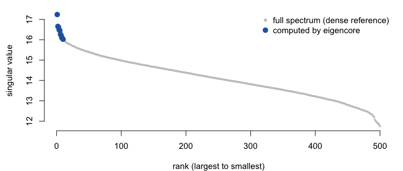
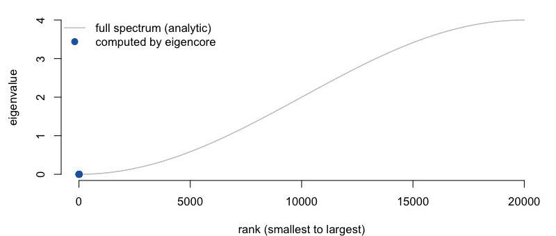

eigencore computes the top-k singular triplets or eigenpairs of a large sparse or structured matrix in R — the computation behind PCA on big sparse data, spectral embeddings, LSA, and low-rank approximation. It runs on native C++ kernels and attaches a numerical certificate to every result, so you know the answer is right, not just that the solver stopped.
If you use RSpectra, irlba, or PRIMME for these problems, eigencore does the same job and adds two things:
-
Every result is checked. Each call returns residuals, a backward-error bound, orthogonality loss, and a single
passed/failedflag. When a bound can only be estimated, the certificate says so instead of passing. - Centering and scaling without densifying. Centering a sparse matrix for PCA normally forces a dense copy. eigencore solves the centered (or scaled, or composed) problem directly — the dense matrix is never formed.
On PCA-shaped sparse SVD problems it is also 1.6×–24× faster than RSpectra, irlba, and PRIMME (see Benchmarks).
Installation
# install.packages("pak")
pak::pak("bbuchsbaum/eigencore")Quick start
The top 10 singular triplets of a 100,000 × 500 sparse matrix — the core computation in sparse PCA and LSA:
library(eigencore)
library(Matrix)
set.seed(2)
A <- as(rsparsematrix(100000, 500, density = 0.002), "dgCMatrix")
fit <- svd_partial(A, rank = 10, target = largest())
fit
#> Partial SVD
#> requested rank: 10
#> converged rank: 10
#> method: native certified Gram SVD special case
#> target: largest
#> max residual: 1.388377e-14
#> max backward error: 4.392928e-17
#> max orthogonality loss: 1.776357e-15
#> norm bound: frobenius_exact
#> scale estimated: FALSE
#> certificate: passedThe printout names the kernel that ran, gives the worst residual, backward error, and orthogonality loss across the returned triplets, and shows the certificate passed with an exact norm bound. The solve takes 15 ms — 1.6× faster than RSpectra, 9× faster than irlba, 2.7× faster than PRIMME (see Benchmarks).

Certificates
An iterative solver can stop early, miss a cluster, or lose orthogonality and still return plausible-looking numbers. RSpectra, irlba, and PRIMME hand you vectors and values; checking them is your problem. eigencore checks both singular relations (||A v - sigma u|| and ||A^T u - sigma v||) and hands you the evidence:
fit$certificate
#> eigencore certificate
#> passed: TRUE
#> tolerance: 1e-08
#> type: residual_backward_error
#> norm bound: frobenius_exact
#> scale estimated: FALSE
#> max residual: 1.388377e-14
#> max backward error: 4.392928e-17
#> max orthogonality loss: 1.776357e-15
#> orthogonality tolerance: 1.490116e-08
#> orthogonality required: TRUEWhen the check cannot be made exact, the certificate says so. For a column-centered sparse matrix the only cheap norm bound is a stochastic estimate, so eigencore returns the singular values but sets passed = FALSE and tells you why:
cen <- svd_partial(center(A, columns = TRUE), rank = 5, target = largest())
cen$certificate$passed
#> [1] FALSE
cen$certificate$norm_bound_type
#> [1] "frobenius_hutchinson_estimate"
cen$certificate$notes
#> [1] "certificate scale uses a stochastic norm estimate; passed is withheld"You decide whether an estimated bound is good enough for your analysis. Other solvers don’t give you the choice — they return the same numbers with no flag.
Center and scale without densifying
A dense centered copy of A would occupy 400 MB; the sparse original is a few MB. center() gives you the centered map as an operator, and the solver works through it directly:
A_centered <- center(A, columns = TRUE) # a 100000 x 500 operator, not a matrix
svd_partial(A_centered, rank = 5, target = largest())$d
#> [1] 17.23701 16.65319 16.60961 16.48647 16.44760Build operators with linear_operator(), combine them with compose(), crossprod_operator(), scale_cols(), center(), and friends. The planner picks the kernel from the structure; plan_solver() shows the choice before you commit to a long solve:
plan_solver(svd_problem(A_centered, target = largest()), rank = 5)$method
#> [1] "native matrix-free Golub-Kahan callback cycle + native Ritz extraction (callback boundary)"Smallest eigenvalues of a symmetric operator
The same interface handles symmetric eigenproblems. Here is a sparse second-difference operator (a 1-D graph Laplacian) of size 20,000, asking for its smallest eigenvalues — the hard end of the spectrum for iterative solvers:
n <- 20000
L <- bandSparse(n, n, k = c(-1, 0, 1),
diagonals = list(rep(-1, n - 1), rep(2, n), rep(-1, n - 1)))
L <- as(L, "dgCMatrix")
eig <- eig_partial(L, k = 8, target = smallest())
eig
#> Partial eigen decomposition
#> requested: 8
#> converged: 8
#> method: native tridiagonal Hermitian shift-invert (factorized Lanczos)
#> target: smallest
#> restart: native_tridiagonal_shift_invert_lanczos
#> locked: 0
#> max residual: 9.026588e-10
#> max backward error: 2.605773e-12
#> max orthogonality loss: 6.439294e-15
#> norm bound: frobenius_metadata+identity_exact
#> scale estimated: FALSE
#> certificate: passedeigencore solves this in 31 ms, certificate passed. The same call through RSpectra’s default mode (which = "SA") does not converge on this matrix — 0 of 8 eigenvalues after 2.7 s. RSpectra is fast here if you know to switch it to shift-invert mode (sigma = 0 solves it in 13 ms); eigencore makes that choice for you and certifies the result. The exact spectrum is known in closed form, so the answer can be checked directly:

Benchmarks
Median wall-clock time. eigencore’s column includes computing the certificate; the baseline columns are solve only. Reproduce with Rscript inst/benchmarks/bench-readme.R.
Problem (all certified passed by eigencore) |
eigencore | vs RSpectra | vs irlba | vs PRIMME |
|---|---|---|---|---|
| Tall sparse SVD, 100000 × 500, k = 10 | 15 ms | 1.6× faster | 9.1× faster | 2.7× faster |
| Wide sparse SVD, 500 × 100000, k = 10 | 12 ms | 12.0× faster | 24.1× faster | 14.0× faster |
| Banded Hermitian, smallest, n = 20000, k = 8 | 31 ms | see note¹ | — | — |
R 4.5.1 · aarch64-apple-darwin20 · RSpectra 0.16.2 / irlba 2.3.7 / PRIMME 3.2.6. The SVD rows also allocate ~6–8× less memory than irlba. Rerun the script for numbers on your machine and BLAS.
¹ RSpectra’s default mode (which = "SA") returns 0 of 8 eigenvalues on this matrix after 2.7 s. Its shift-invert mode (sigma = 0) solves it in 13 ms — faster than eigencore — if you know to reach for it. eigencore picks the method itself and certifies the result.
The SVD speedups come from a certified Gram kernel for tall/wide sparse problems whose small dimension is ≤ 512 (≤ 1024 for wide matrices). Outside that — a tall SVD with more than 512 columns, or a general sparse matrix like a 2-D-grid Laplacian — RSpectra is currently 2–6.5× faster on the cases we measure, narrowing to parity on the larger grid (n = 40,000). fit$method always names the path that ran, so there is no guessing.
When to use what
Use eigencore for tall or wide sparse SVD (PCA-shaped problems), the smallest eigenvalues of banded or structured symmetric operators (certified, no mode tuning), centered or scaled or composed operators, dense generalized eigen/QZ/GSVD compatibility work through eig_full(), generalized_schur(), and generalized_svd(), and anywhere you want the result checked rather than taken on faith.
Use RSpectra or irlba for general large sparse problems outside those shapes, and RSpectra’s shift-invert mode when raw speed on smallest or interior eigenvalues matters more than a certificate. Switching in either direction is a one-line change, because eigencore ships drop-in wrappers with the same arguments:
res <- eigs_sym(L, k = 8, which = "SA")
res$values
#> [1] 2.467154e-08 9.868617e-08 2.220439e-07 3.947447e-07 6.167886e-07
#> [6] 8.881755e-07 1.208906e-06 1.578979e-06
res$certificate$passed
#> [1] TRUEeigs(), eigs_sym(), and svds() accept the same which codes as RSpectra ("LM", "SM", "LA", "SA", "LR", "SR", "LI", "SI", "BE") and additionally return a certificate.
Learning more
vignette("eigencore", package = "eigencore") is the guided tour. vignette("certificates", package = "eigencore") explains how to read the numerical evidence and what to do when a check fails.
Status
eigencore 1.0.0 is headed for CRAN. The exported API is stable — it is frozen by a snapshot test, and breaking changes follow semantic versioning from here. The numerics are solid: every shipped solver path is benchmarked against RSpectra and PRIMME, covered by an adversarial test suite, and certified on every call. Problem classes without a native kernel yet — general matrix-free SVD, interior eigenvalues at scale, nonsymmetric Krylov–Schur — are labeled reference in fit$method rather than quietly slow. The package vignettes describe the workflow map, benchmark evidence, and current boundaries.